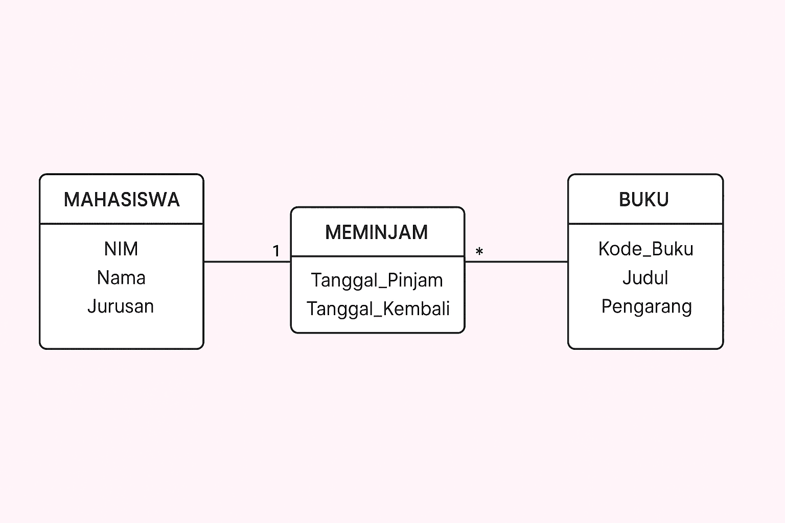

Blog ini membahas tentang instalasi Database Management System (DBMS)
MySQL serta konsep dasar Entity-Relationship Diagram (ERD), termasuk
implementasinya. Dibuat untuk mata kuliah Basis Data. 🌸
Pendahuluan
Database merupakan fondasi utama dalam pengelolaan data modern. Dalam
tugas ini, saya akan menjelaskan cara menginstal MySQL sebagai DBMS
relasional, memahami elemen kunci ERD (Entitas, Atribut, Relasi), dan
bagaimana menerjemahkannya menjadi skema database nyata. Contoh kasus:
Sistem Perpustakaan Sederhana.
Tujuan tugas: Mempraktikkan instalasi DBMS dan desain database
menggunakan ERD untuk efisiensi data.
Dibuat oleh: Dea Nurlaela | NIM: 1018 | Kelas: IF24E
Post 1: Tata Cara Instalasi DBMS MySQL
MySQL adalah DBMS open-source yang populer untuk aplikasi web.
Instalasi dilakukan di MacOs. Ikuti video tutorial di bawah untuk
panduan visual.
Instalasi: Pilih "Developer Default", set root
password.
Verifikasi: Jalankan
mysql -u root -p dan SHOW DATABASES;.
Troubleshooting: Cek port 3306 dan firewall.
Diposting: 6 Oktober 2025 | Kategori: Tutorial
Post 2: Apa Itu Attribute, Entitas, dan Relasi dalam ERD?
ERD adalah model visual untuk desain database. Elemen kunci: Entitas
(objek), Atribut (properti), Relasi (hubungan).
1. Entitas (Entity)
Objek utama, digambarkan sebagai rectangle. Contoh: "Mahasiswa" dan
"Buku". Jenis: Strong (mandiri) vs Weak (bergantung).
2. Atribut (Attribute)
Properti entitas, digambarkan sebagai oval. Contoh: NIM (primary key),
Nama. Jenis: Simple, Composite, Multivalued, Derived.
3. Relasi (Relationship)
Hubungan antar entitas, digambarkan sebagai diamond. Kardinalitas:
1:1, 1:N, M:N. Contoh: "Meminjam" (M:N).
Contoh Diagram ERD (Sistem Perpustakaan)

Mahasiswa (Entitas) Relasi Buku (Entitas) +----------------+
+----------+ +--------+ | NIM (PK) |<--Meminjam-->| |<--M:N-->| ISBN
(PK)| | Nama | | (Diamond) | | Judul | | Jurusan | +----------+
+--------+ +----------------+ Atribut: Oval
Diagram ini menunjukkan relasi many-to-many yang butuh tabel perantara. note: Tanda “1” dan “*” dalam diagram ERD itu menunjukkan kardinalitas (cardinality) yaitu berapa banyak entitas yang bisa terhubung dalam suatu relasi.
Diposting: 5 Oktober 2025 | Kategori: Konsep ERD
Post 3: Implementasi ERD ke Skema Database MySQL
Setelah desain ERD, implementasikan ke MySQL: Entitas → Tabel, Atribut
→ Kolom, Relasi → Foreign Key. Contoh untuk sistem perpustakaan.
SQL Query untuk Implementasi:
-- Buat Database CREATE DATABASE Perpustakaan; USE Perpustakaan; --
Tabel Mahasiswa (dari Entitas) CREATE TABLE Mahasiswa ( NIM
VARCHAR(10) PRIMARY KEY, Nama VARCHAR(100) NOT NULL, Jurusan
VARCHAR(50) ); -- Tabel Buku (dari Entitas) CREATE TABLE Buku ( ISBN
VARCHAR(13) PRIMARY KEY, Judul VARCHAR(200) NOT NULL ); -- Tabel
Peminjaman (dari Relasi M:N) CREATE TABLE Peminjaman ( ID_Peminjaman
INT AUTO_INCREMENT PRIMARY KEY, NIM VARCHAR(10), ISBN VARCHAR(13),
Tanggal_Pinjam DATE, FOREIGN KEY (NIM) REFERENCES Mahasiswa(NIM) ON
DELETE CASCADE, FOREIGN KEY (ISBN) REFERENCES Buku(ISBN) ON DELETE
CASCADE ); -- Contoh Insert Data INSERT INTO Mahasiswa (NIM, Nama,
Jurusan) VALUES ('1018', 'Dea', 'Informatika'); INSERT INTO Buku
(ISBN, Judul) VALUES ('978-602-8519-99-2', 'Belajar Database dengan MySQL');
INSERT INTO Peminjaman (NIM, ISBN, Tanggal_Pinjam) VALUES ('1018',
'978-602-8519-99-2', '2025-10-05'); -- Query Test: Tampilkan
Peminjaman SELECT m.Nama, b.Judul, p.Tanggal_Pinjam FROM Peminjaman p
JOIN Mahasiswa m ON p.NIM = m.NIM JOIN Buku b ON p.ISBN = b.ISBN;
Analisis: Implementasi ini memastikan integritas data melalui foreign
key, menghindari duplikasi.
Diposting: 05 Oktober 2025 | Kategori: Implementasi
Kesimpulan
Dari tugas ini, saya menyimpulkan bahwa instalasi MySQL cukup mudah
dan ERD sangat esensial untuk merancang database yang efisien. Proses
implementasi dari ERD ke skema MySQL membantu memahami bagaimana model
konseptual diterjemahkan menjadi struktur fisik yang dapat dijalankan.
Kelebihan MySQL termasuk gratis, mudah diskalakan, dan kompatibel
dengan banyak aplikasi.